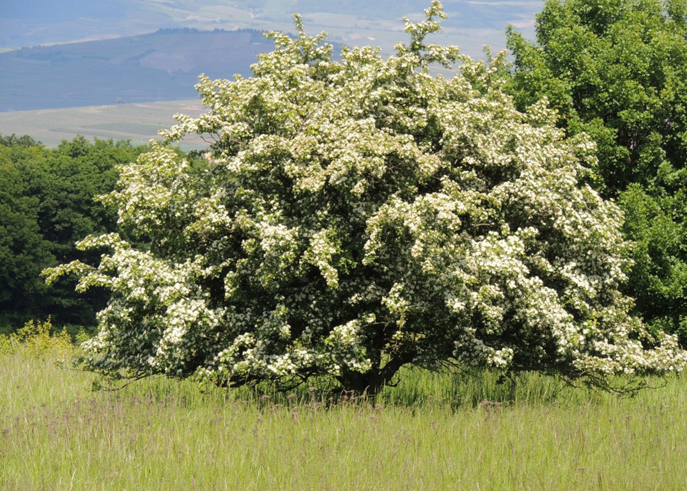
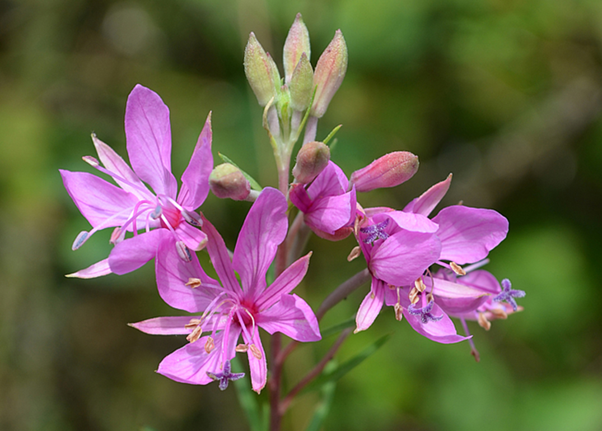
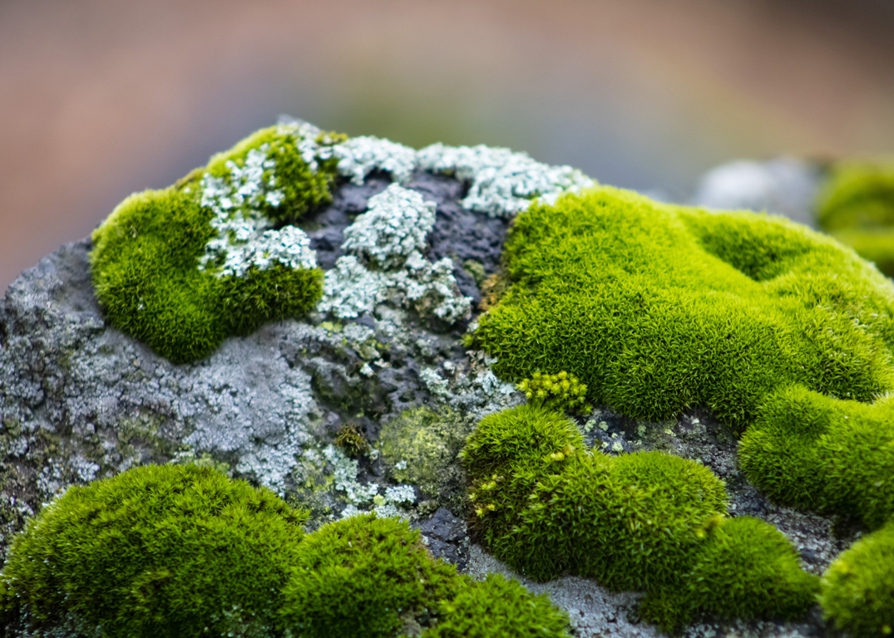
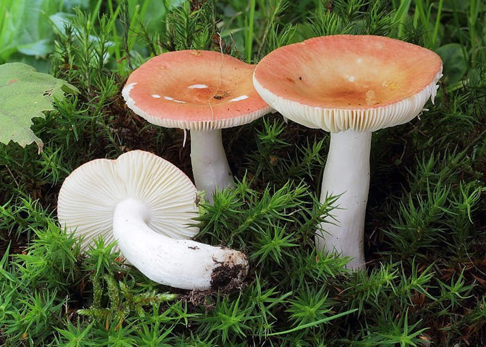
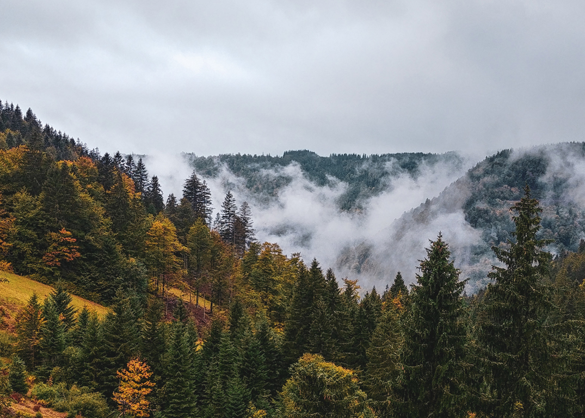
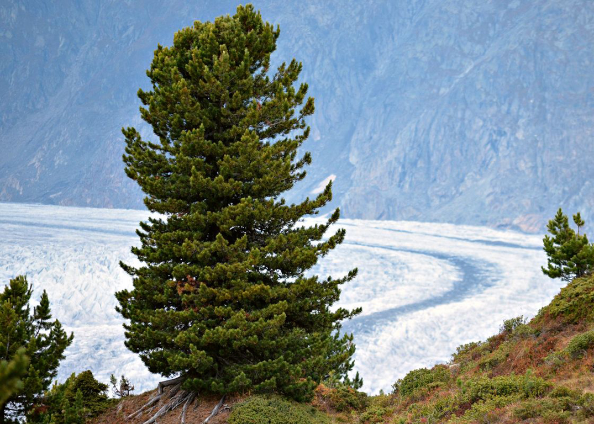

|
Botanica

Inoltre, ben una novantina di specie della flora nazionale sono presenti in Svizzera nel solo Ticino e un’altra decina è diffusa in Ticino e in sole 2 o 3 altre località svizzere.
La posizione geografica, la varietà di climi e di suoli, le notevoli differenze di altitudine e le complesse vicende geo–storiche hanno contribuito a determinare in Ticino una pregevole diversità vegetazionale e floristica.
Il Ticino, quinto cantone per estensione della Svizzera (6,8% della superficie nazionale), è per queste ragioni al secondo posto (subito dopo il Vallese) per numero di specie vegetali. Sono presenti infatti oltre 2500 specie di piante vascolari spontanee, tenuto conto anche delle specie esotiche naturalizzate, a cui occorre aggiungerne altrettante coltivate nei giardini grazie alla particolare mitezza del clima.
|
Il settore Botanica si occupa degli aspetti inerenti la vegetazione e la flora del Cantone Ticino.

Il Cantone appartiene inoltre a una zona floristica d’incontro o sovrapposizione degli areali di distribuzione di specie appartenenti a tutti i 7 diversi elementi floristici europei. Così, varie essenze orientali e occidentali trovano proprio in Ticino il loro limite di diffusione. Ne consegue, che in territori talvolta assai circoscritti, come per esempio il Monte di Caslano, o il Monte San Giorgio, sono presenti piante dell’elemento floristico boreal–subalpino accanto a piante di quello sub–mediterraneo. Storicamente la straordinaria varietà floristica del Cantone fu messa in evidenza già nel Settecento, coinvolgendo da allora numerosi botanici.
|
|
Funghi

Il Cantone Ticino, grazie alla ricchezza e alla varietà degli ambienti naturali rappresenta un territorio di notevole interesse micologico. L'andar per funghi è per molti ticinesi una tradizione. La grande varietà geologica e climatica e la conseguente ricchezza floristica favorisce la crescita di numerose specie di funghi, alcune delle quali molto rare. Fino ad oggi sono state censite ca. 3000 specie e ogni anno questo numero aumenta. A basse quote si possono reperire specie tipiche della flora mediterranea, mentre a nord del Cantone troviamo specie artico–alpine.
|
Il settore micologico del Museo cantonale di storia naturale si occupa di macromiceti (principalmente Basidiomiceti, Ascomiceti e Mixomiceti) e di licheni.

L’attività di questo reparto è cominciata nel 1978 con l’allestimento di un’esposizione didattica di funghi liofilizzati (essiccati sotto vuoto, i reperti congelati mantengono inalterata forma e proporzioni), a disposizione delle scuole e della popolazione (esposizione permanente). Parallelamente a quella dei liofilizzati, iniziò anche la costituzione della collezione dei funghi essiccati (fungario o ‟erbario micologico”) che documenta in modo scientifico, con materiale datato e localizzato, la ricchezza micologica del Cantone Ticino e che raccoglie importanti campioni di riferimento.
Il settore micologico è una peculiarità del Museo di storia naturale di Lugano: in Svizzera sono pochissimi gli altri istituti che si occupano di funghi.
|
|
Mazza di Tamburo /
Funghi 
Distribuzione e habitat
Vive spesso gregario, indifferentemente in boschi di latifoglie o di conifere, come nei prati, nelle radure e sui bordi della strada. È diffuso in Nord America e in Europa. Compare dall’estate all’autunno. Descrizione
Il cappello è inizialmente sferoidale, poi convesso e piano a maturità; è dotato di umbone bruno o bruno–grigio, liscio al centro e quindi coperto di scaglie fioccose e brunicce, con caratteristica disposizione radiale, sempre più rade verso il margine che si presenta sfrangiato. La cuticola è color nocciola–biancastra, fibrillosa e setosa. Di dimensioni ragguardevoli che vanno dai 10 finanche ai 25 cm.
Le lamelle sono fitte, numerose, irregolari e di colore bianco o giallastro, poi tendenti al color rosato–bruno o cipria e imbrunenti al tocco. Ventricose ed alte, mostrano un evidente distacco dal gambo.
Il gambo è assai slanciato e sottile (20–45 cm x 10–20 mm), di diametro pressoché costante e normalmente diritto, fibroso, duro, cavo e cilindrico. Bulboso al piede, è adornato da un anello doppio, scorrevole e ampio. Al di sotto dell’anello è presenta la caratteristica ed evidente squamatura color caffellatte.
La carne è bianca e tendente al rosato o al rossastro al taglio, fioccosa, tenera, poco consistente e fragile nel cappello, è fibrosa (quasi legnosa) nel gambo.Odore: leggero e di nocciola (talvolta di urina sul cappello). Sapore: dolce, di nocciola. Come per altre specie fungine, dopo la cottura la ‟resa” non è molto elevata in quanto i cappelli anche se di dimensioni enormi si riducono considerevolmente in larghezza. |
La mazza di tamburo è un fungo basidiomicete
della famiglia Agaricaceae. È uno dei più vistosi, conosciuti ed apprezzati funghi commestibili. La sua tossicità da cruda, caratteristica poco nota e comune ad altre specie congeneri, è causa di non infrequenti intossicazione. 
Commestibilità
Commestibile con cautela: fungo leggermente tossico da crudo, che necessita di prolungata cottura, ne va perciò evitata la preparazione alla piastra o alla griglia, in quanto le parti interne potrebbero rimanere parzialmente crude. Va consumato solo il cappello.Si presta per la preparazione di cotolette, quando il cappello è totalmente aperto e con le lamelle ancora bianche, mentre con gli esemplari più giovani non ancora aperti si possono preparare frittate.
Gli esemplari essiccati spontaneamente sono più aromatici e dovrebbero aver perso la loro tossicità; si consiglia comunque di consumarli previa cottura. Si raccomanda di non immergere in acqua il gambo degli esemplari ancora chiusi, per accelerarne l’apertura. Ciò potrebbe comportare una maggiore tossicità del fungo.
Specie simili
Difficilmente confondibile con altre specie congeneri, in virtù della sua notevole stazza. Tuttavia, in condizioni climatiche ed ambientali particolari, la M. procera si presenta di dimensioni assai ridotte rispetto alla norma e pertanto può essere confusa facilmente con specie somiglianti. Particolarmente pericolosa è la confusione con le specie del genere Lepiota, di dimensioni molto più piccole (diametro di pochi cm), molte delle quali sono velenose o mortali.
|
|
Lariceto
Possiede una caratteristica che lo distingue totalmente dalle altre conifere europee, infatti il larice comune, o alpino, perde totalmente le foglie in inverno. Questa caratteristica gli permette, senza dubbio, di avere una maggiore resistenza nei confronti del freddo e di poter essere riconosciuto a prima vista in un bosco montano invernale. In primavera la pianta mette su foglie verdi, aghiformi e resistenti, mentre in autunno tutto il fogliame diviene di colore giallo e cade al suolo. In Italia è molto comune in tutte le Alpi, dove si spinge anche a quote molto elevate (oltre i 2.500 metri). Dove il bosco lascia il posto alle praterie alpine si incontrano vecchi individui isolati, deformati dal vento e dalla neve. Il larice è una aghifoglia e caducifoglia, è molto longevo e può vivere migliaia di anni.
|
Il larice comune (Larix decidua) è una conifera nativa delle montagne dell’Europa centrale,
delle Alpi e dei Carpazi.

Il larice comune ha, presumibilmente, origini da un ceppo di pseudo-Larix provenienti dalle zone dell'Europa del nord e della Siberia venuto in Europa centrale e meridionale al tempo dell'ultima glaciazione. Una volta cominciato il ritiro dei ghiacci popolazioni di questa conifera sono rimaste isolate nelle montagne europee delle Alpi e, in minor parte, dei Carpazi. Rimasti soli in questa isola ecologica le popolazioni si sono evolute in modo autonomo diventando specie a sé stante. Il legno di larice comune è conosciuto fin dall’antichità per la sua durata e robustezza. Per la facile lavorazione, il suo bel colore rosso intenso, è apprezzato nei lavori di falegnameria, specie per gli esterni. Immerso in acqua, diviene resistentissimo. Come altre conifere, dalla resina si estrae la trementina (trementina di Venezia).
La corteccia è impiegata per l’estrazione del tannino. Da sempre le popolazioni alpine hanno sfruttato il suo legno, è molto noto in Valle d’Aosta, in Trentino, in Alto Adige e nel bellunese il fatto di utilizzare come materiale da costruzione delle case il legno di questa conifera e addirittura intagliare un tipo di tegola di lunga durata per i tetti (in alcune vallate detta Schindola, Schindel o Scandola).
Il legno di questa conifera, oltre ad essere materiale da costruzione, è da sempre usato come combustibile per stufe e camini. Le popolazioni locali lo sceglievano, inoltre, per le sue migliori caratteristiche ed il suo più elevato costo (grazie alla sua diffusione meno comune rispetto all’Abete rosso) per commercializzarlo.
|
|
Lariceto /
Pino Cembro
Morfologia
Il suo legno è molto pregiato ed è usato in modo particolare per le sculture. È l’unico pino a 5 aghi presente spontaneamente in Europa.
È un albero che può essere alto fino a 25 metri, anche se di solito non supera i 15, con chioma cilindrico-conica. È una specie longeva.
La corteccia si presenta grigiastra, sottile e liscia con tracce di resina nelle parti giovani, nelle parti adulte appare rugosa, screpolandosi in piccole placche con fessure rosso brunastre. Sono aghiformi e raccolte in mazzette da 5, gli aghi sono lunghi 5–8 cm, di colore scuro sulla parte superiore e grigiastro su quella inferiore. Le foglie sono simili a quelle del Pinus Pinea.
|
Il Pino Cembro, detto anche semplicemente Cembro o Cirmolo, è un albero
sempreverde aghifoglie del genere Pinus che vive sulle Alpi.

Distribuzione e habitat
Specie montana, l’areale è disgiunto, con areale principale in Siberia centrale e disgiunzioni sull’arco alpino più due zone nei Balcani e in Europa centrale. Cresce a partire dai 1200 metri di quota fino al limite superiore dei boschi di conifere subalpini, trovando condizioni ottimali tra i 1600 e i 2100 m di altitudine, predilige suoli a reazione acida, ma può vivere anche su substrati calcarei acidificati o dilavati in superficie dall’azione delle acque meteoriche. Il pino cembro può formare boschi misti con l’abete rosso, con il larice o anche boschi puri, particolarmente pregiati, come il famoso Bosco dell’Alevè della Valle Varaita, nelle Alpi Cozie.
In Piemonte è presente sulle Alpi Cozie e Marittime (nelle valli Varaita, Gesso, Maira, Stura, Susa, Chisone, Pesio) mentre è raro in Val Sesia e Ossola. Forma cembrete pure (1.500 ettari) e miste al larice (3.500 ettari) o con abete rosso; in passato è stata eliminata per far spazio al lariceto pascolato, oggi è in lenta ripresa. In Lombardia è molto diffuso nel Bormiese e nel Livignasco, dove forma sia boschi misti con il larice sia boschi puri, come la cembreta di Valfurva, mentre è presente solo in boschi misti nell’alta Val Chiavenna, Val Malenco, alta Val Camonica e Adamello, raro sulle Orobie. In Trentino è diffuso perlopiù in boschi misti in alta Val di Pejo, Val di Fumo, alta Val di Fassa, Val Travignolo e catena del Lagorai. In Alto Adige è presente in tutta la provincia, ma forma boschi puri soprattutto sulle Dolomiti in Val Gardena, Val Badia e alta Pusteria. Nel Veneto non forma mai boschi puri ma partecipa a formazioni miste con il larice e l’abete rosso, spingendosi a est fino alla conca di Misurina e a Sud fino al Passo Giau, Passo Falzarego, Passo San Pellegrino e Passo Valles. Manca nei boschi del Friuli in conseguenza del clima umido delle Alpi Carniche e Giulie.
|